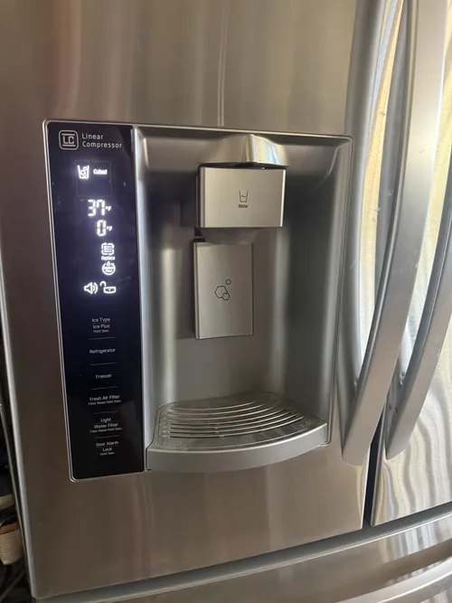

LG Refrigerator Repair: How Temperature Sensors Affect Cooling Performance
Modern refrigerators rely on far more than compressors and fans to maintain proper cooling performance. One of the most important yet often overlooked components is the temperature sensor. These small electronic devices continuously monitor temperatures throughout the refrigerator and freezer compartments, providing critical information to the appliance’s control system. When a temperature sensor begins to fail, cooling performance can become unpredictable and lead to a wide range of refrigerator problems.
Temperature sensors play a central role in modern LG refrigerator operation. Unlike older appliances that relied primarily on mechanical thermostats, newer refrigerators use multiple sensors to monitor conditions in different areas of the appliance. These sensors communicate with electronic control boards, helping regulate cooling cycles, fan operation, defrost functions, compressor activity, and overall temperature management.
Professional LG refrigerator repair often involves evaluating sensor performance because even a small sensor error can create significant cooling problems. Since modern refrigerators depend heavily on accurate temperature information, faulty sensor readings may cause the appliance to make incorrect operating decisions.

One of the most common signs of a temperature sensor problem is inconsistent cooling. Homeowners may notice that food freezes unexpectedly in the refrigerator compartment, while other items remain too warm. Some shelves may feel significantly colder than others, and temperatures may fluctuate throughout the day. These symptoms often occur because the refrigerator receives inaccurate temperature information and adjusts cooling cycles improperly.
A refrigerator that runs constantly may also have a sensor related issue. If a faulty sensor incorrectly reports that temperatures are too warm, the control system may keep the compressor running longer than necessary. This can increase energy consumption, place additional stress on cooling components, and accelerate wear on the refrigeration system.
The opposite situation can occur as well. If a sensor incorrectly reports that temperatures are colder than they actually are, the refrigerator may reduce cooling prematurely. As a result, food may spoil faster, beverages may not stay cold enough, and freezer temperatures may gradually increase. Professional LG refrigerator repair diagnostics help determine whether sensor readings accurately reflect actual operating conditions.
Ice maker performance can also be affected by temperature sensor failures. Modern ice production systems depend on proper freezer temperatures to operate correctly. If sensors provide inaccurate information, the refrigerator may interrupt ice making cycles or produce ice inconsistently. Homeowners often assume the ice maker itself is defective when the root cause actually involves temperature monitoring problems.
Defrost system operation is another area influenced by temperature sensors. Refrigerators use sensor data to determine when defrost cycles should begin and end. A faulty sensor may cause excessive frost buildup, reduced airflow, or cooling inefficiencies throughout the appliance. Over time, these conditions can create additional refrigerator problems beyond the original sensor failure.
Many newer LG refrigerators contain multiple temperature sensors located throughout the appliance. Some monitor freezer conditions, while others track refrigerator temperatures, evaporator performance, or specific cooling zones. Because these sensors work together to maintain proper operation, diagnosing temperature related problems often requires specialized testing procedures.
Error codes sometimes provide clues about sensor related issues. Modern refrigerators continuously monitor sensor performance and may display warning messages when abnormal readings are detected. However, sensor failures do not always generate error codes immediately. In many cases, homeowners first notice changes in cooling performance long before electronic warnings appear.
Temperature sensor problems can occasionally mimic other refrigerator failures. Symptoms such as poor cooling, excessive runtime, frost buildup, and inconsistent temperatures may resemble compressor problems, airflow restrictions, evaporator fan failures, or control board malfunctions. This is why professional LG refrigerator repair focuses on comprehensive diagnostics rather than replacing parts based solely on symptoms.
Electrical issues can also affect sensor operation. Damaged wiring, loose connections, moisture intrusion, or electronic control board problems may interfere with communication between sensors and the refrigerator’s control system. Accurate testing helps determine whether the sensor itself has failed or whether another component is affecting its performance.
Because temperature sensors influence nearly every aspect of refrigerator operation, accurate diagnostics are essential whenever cooling performance becomes unstable. Professional LG refrigerator repair technicians use specialized equipment to evaluate sensor readings, verify system communication, and identify the true source of cooling problems.
Understanding how temperature sensors affect refrigerator performance helps homeowners recognize warning signs before larger failures occur. Whether your refrigerator is running continuously, freezing food unexpectedly, struggling to maintain temperature, or displaying unusual operating behavior, temperature sensor issues may be contributing to the problem. Early diagnosis can help restore reliable cooling performance while protecting the long term health of the appliance.